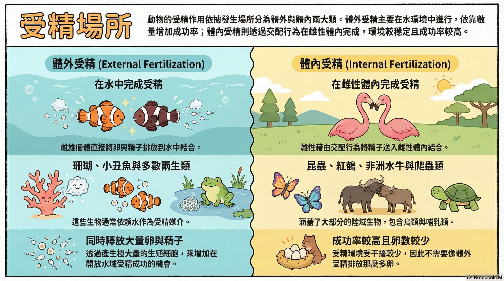

教學重點
關鍵字已用不同顏色標示
動物的受精作用依發生場所不同，可分為體外受精和體內受精。
行體外受精的動物，例如多數的兩生類、珊瑚和魚類， 成熟的雌、雄個體會直接將卵和精子排放到水中， 使卵與精子在水中結合。體外受精的動物常會同時釋出大量的卵和精子， 以增加成功受精的機會。
行體內受精的動物，例如昆蟲、爬蟲類、鳥類和哺乳類等， 雄性必須藉由交配行為將精子送入雌性體內， 使卵與精子在雌性體內結合。體內受精的動物，受精環境較不會被干擾和破壞， 成功的機會較高，所釋出卵的數目通常也比行體外受精的動物少。

互動練習題（共 4 題）
題型：單選｜多選｜配對｜短答
第 1 題｜單選題：哪一句最符合「體內受精」？
選出最符合文本描述的一句。
第 2 題｜多選題：哪些是「體外受精」的例子？
請勾選「全部正確」選項（可複選）。
第 3 題｜配對題：將受精方式與「發生場所／特徵」配對
兩列都必須完成選擇。
體外受精
體內受精
第 4 題｜多選題：為什麼體內受精成功機會較高？
請勾選所有正確原因（可複選）。
提示：若「檢查答案」不能按，代表你還沒完成該題的作答。